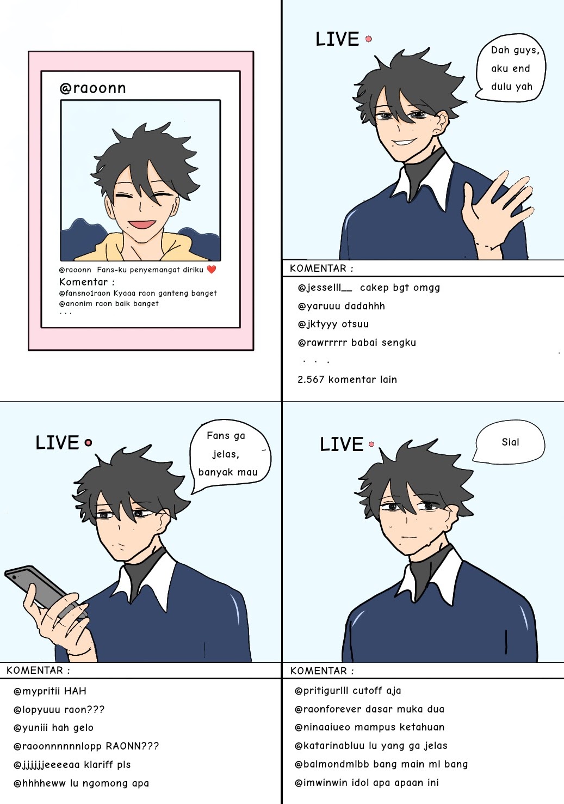

Tugas Laporan Hasil Observasi (LHO)
Pernyataan Umum
Melon (Cucumis melo) merupakan tanaman semusim yang termasuk ke dalam famili Cucurbitaceae, bersama dengan semangka, mentimun, dan labu. Tanaman ini tumbuh merambat dengan batang menjalar, daun berbentuk menjari, serta bunga berwarna kuning yang menjadi cikal bakal buah. Melon berasal dari wilayah Mediterania, Persia, hingga India, kemudian menyebar ke berbagai belahan dunia melalui jalur perdagangan dan pertanian. Saat ini, melon banyak dibudidayakan di daerah beriklim tropis maupun subtropis, termasuk Indonesia, karena nilai ekonominya yang tinggi dan rasanya yang disukai masyarakat.
Deskripsi Bagian
Secara morfologi, melon memiliki beberapa bagian utama, yaitu akar, batang, daun, bunga, dan buah. Akar melon berfungsi menyerap air dan unsur hara dari tanah untuk mendukung pertumbuhan tanaman. Batangnya berbentuk bulat dan menjalar dengan sulur yang membantu tanaman menempel pada penopang. Daun melon berwarna hijau muda hingga tua, berbentuk menjari, dan berfungsi dalam proses fotosintesis. Bunga melon berwarna kuning cerah, terdiri atas bunga jantan dan betina yang berperan penting dalam proses penyerbukan dan pembuahan.
Bagian yang paling menarik dari tanaman ini adalah buahnya. Kulit buah melon memiliki tekstur halus atau berpola jaring tergantung varietasnya, dan berfungsi melindungi bagian dalam buah. Daging buahnya tebal, berair, dan memiliki rasa manis serta aroma yang khas. Kandungan air pada daging melon mencapai sekitar 90%, menjadikannya sangat menyegarkan. Di bagian tengah terdapat rongga berisi biji yang dilapisi lapisan berserat lembut. Biji melon berwarna putih kekuningan, berbentuk pipih, dan kaya akan protein serta lemak sehat.
Melon memiliki banyak varietas yang berbeda bentuk, warna, dan rasa. Beberapa jenis melon yang populer di dunia antara lain cantaloupe yang berdaging jingga manis, honeydew dengan daging hijau lembut dan rasa segar, golden melon berwarna kuning cerah yang banyak ditemukan di Indonesia, galia melon hasil persilangan dengan aroma khas tropis, serta Yubari King dari Jepang yang terkenal sebagai salah satu melon termahal di dunia karena kualitas dan rasanya yang sangat istimewa.
Deskripsi Manfaat
Buah melon memiliki kandungan gizi yang sangat bermanfaat bagi tubuh manusia. Daging buahnya kaya akan vitamin A dan C, serat, kalium, serta antioksidan yang dapat membantu meningkatkan sistem imun, menjaga tekanan darah, dan melindungi sel tubuh dari radikal bebas. Kandungan air yang tinggi menjadikan melon efektif untuk mencegah dehidrasi dan menjaga keseimbangan cairan tubuh, terutama pada cuaca panas. Seratnya membantu melancarkan pencernaan dan menjaga kesehatan usus, sedangkan antioksidannya berperan dalam menjaga kesehatan kulit, rambut, serta mencegah penuaan dini.
Selain itu, biji melon juga bermanfaat karena mengandung protein, lemak sehat, dan mineral seperti magnesium dan seng yang baik untuk perkembangan sel serta kesehatan jantung. Bagi ibu hamil, konsumsi melon dapat membantu memenuhi kebutuhan cairan dan vitamin penting untuk mendukung pertumbuhan janin. Dengan rasa manis yang alami, aroma segar, dan kandungan nutrisi yang lengkap, melon menjadi salah satu buah yang digemari masyarakat di berbagai negara serta memiliki nilai gizi dan ekonomi yang tinggi.
Teks Anekdot

Penjelasan Makna Tersirat:
Anekdot ini berisi sindiran kepada artis-artis dan juga influencer yang di depan kamera mereka memiliki sifat yang berbeda dengan di belakang kamera, yang mengartikan bahwa kita tidak boleh menilai seseorang di depannya doang.
Biografi: Prajogo Pangestu
Dokumen 1
Dokumen 2
Sumber Referensi
- Wikipedia (EN) - Prajogo Pangestu
- Wikipedia (ID) - Prajogo Pangestu
- Forbes - Profil Prajogo Pangestu
- Barito Pacific - Profil Prajogo Pangestu
- Antara News - Orang Terkaya di Indonesia Versi Forbes
- Kompas - Daftar 29 Orang Terkaya Indonesia Terbaru
- Kompas - Kembali Jadi Orang Terkaya di Indonesia
- Kumparan - Profil Prajogo Pangestu
Kuis Majas & Sastra 📚
Uji pemahaman Anda tentang majas, teks anekdot, dan laporan observasi!